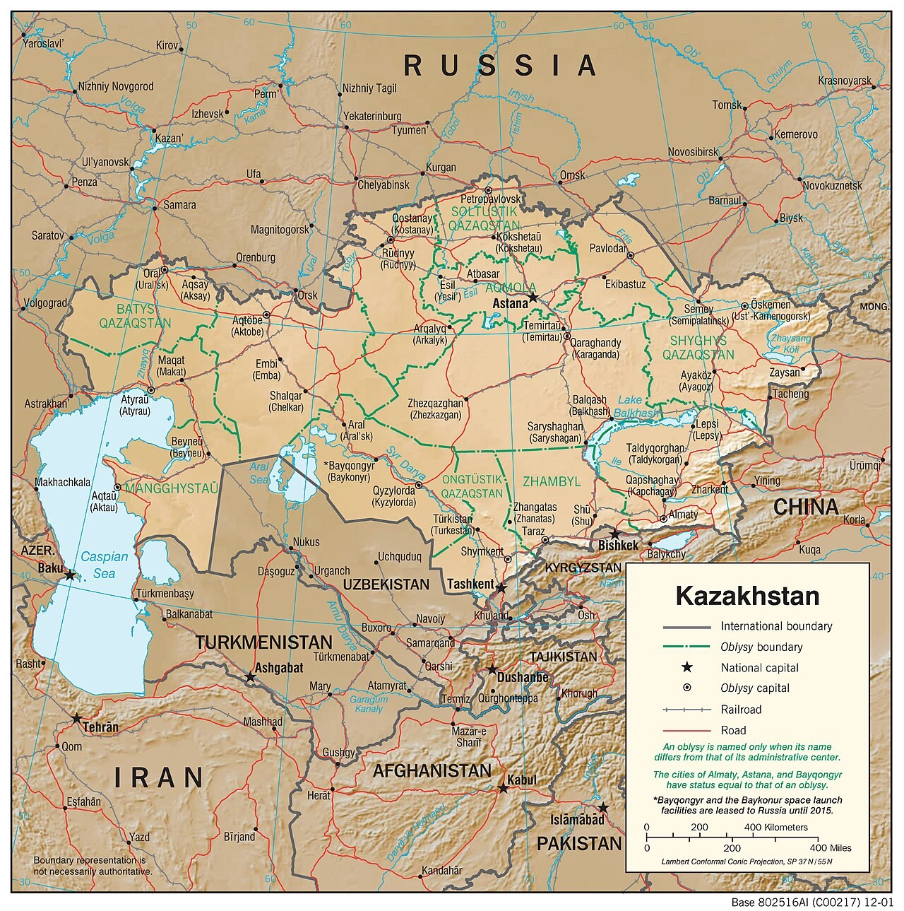

Тактикалық дайындық · Карта Drill & Tactical · Map Строевая и тактическая подготовка · Карта
Масштаб, шартты белгілер, карта түстері және километрлік тор бойынша координаталар. Scale, conventional signs, map colours and coordinates by the kilometre grid. Масштаб, условные знаки, цвета карты и координаты по километровой сетке.

Топографиялық карта — жер учаскесінің шартты белгілермен орындалған дәл әрі кішірейтілген бейнесі. Ол жер бедерін оқуға, бағыт пен ара қашықтықты өлшеуге, координатаны анықтап нысананы көрсетуге мүмкіндік береді. A topographic map is an accurate, reduced image of a piece of terrain drawn with conventional signs. It lets you read the ground, measure direction and distance, determine coordinates and designate targets. Топографическая карта — точное уменьшенное изображение участка местности, выполненное условными знаками. Она позволяет читать местность, измерять направление и расстояние, определять координаты и указывать цели.
Картаны оқу үшін төрт нәрсені білу қажет: масштаб, шартты белгілер, түстер және координаталар торы. Әр элемент жер туралы белгілі бір ақпаратты береді. To read a map you must know four things: scale, conventional signs, colours and the coordinate grid. Each element conveys specific information about the ground. Чтобы читать карту, нужно знать четыре вещи: масштаб, условные знаки, цвета и координатную сетку. Каждый элемент несёт определённую информацию о местности.
Масштаб — картадағы кесінді мен жердегі нақты қашықтықтың арақатынасы. Сандық масштаб бөлшек түрінде жазылады (мыс. 1:50 000). Scale is the ratio of a length on the map to the real distance on the ground. The numerical scale is written as a fraction (e.g. 1:50 000). Масштаб — отношение отрезка на карте к действительному расстоянию на местности. Численный масштаб записывают дробью (напр. 1:50 000).
| Сандық масштабNumerical scaleЧисленный масштаб | 1 см-де жерде1 cm equals on groundВ 1 см на местности | ҚолданылуыUseПрименение |
|---|---|---|
| 1:25 000 | 250 м250 m250 м | егжей-тегжейлі, өзара іс-қимыл деңгейіндеdetailed, at small-unit levelдетальная, на уровне подразделения |
| 1:50 000 | 500 м500 m500 м | негізгі тактикалық картаthe main tactical mapосновная тактическая карта |
| 1:100 000 | 1000 м (1 км)1000 m (1 km)1000 м (1 км) | шолу, марш пен жоспарлау үшінoverview, for marches and planningобзорная, для маршей и планирования |
Бөлгіш неғұрлым үлкен болса — карта соғұрлым ұсақ әрі шолулы (ауқымды аумақты қамтиды, бірақ егжей-тегжейі азаяды). The larger the denominator, the smaller and more general the map — it covers a wider area but shows less detail. Чем больше знаменатель — тем мельче и обзорнее карта: охватывает больше местности, но показывает меньше деталей.
| ТопGroupГруппа | СипатыNatureХарактер | МысалдарExamplesПримеры |
|---|---|---|
| АумақтықArealПлощадные | ауданды масштабпен дәл бейнелейдіshow an area true to scaleпередают площадь в масштабе | орман, батпақ, елді мекен, көлforest, marsh, settlement, lakeлес, болото, населённый пункт, озеро |
| СызықтықLinearЛинейные | ұзындығы масштабта, ені шарттыlength to scale, width conventionalдлина в масштабе, ширина условна | жолдар, өзендер, электр желілеріroads, rivers, power linesдороги, реки, ЛЭП |
| МасштабсызOff-scaleВнемасштабные | шағын нысан, тек орны дәлsmall object — only its position is exactмелкий объект — точно лишь его место | көпір, бұлақ, жеке ағаш, мұнараbridge, spring, lone tree, towerмост, родник, отдельное дерево, башня |
| ТүсіндірмеExplanatoryПояснительные | басқа белгіні нақтылайдыqualify other signsуточняют другие знаки | жазулар, биіктік белгілері, ағаш түріlabels, spot heights, tree speciesподписи, отметки высот, порода леса |
| ТүсColourЦвет | Нені білдіредіWhat it showsЧто обозначает |
|---|---|
| КөкBlueСиний | су нысандары — өзен, көл, бұлақ, батпақwater features — rivers, lakes, springs, marshesводные объекты — реки, озёра, родники, болота |
| ЖасылGreenЗелёный | өсімдік жамылғысы — орман, бұта, бақvegetation — forest, scrub, orchardsрастительность — лес, кустарник, сады |
| ҚоңырBrownКоричневый | бедер — горизонтальдар, биіктік белгілеріrelief — contour lines, spot heightsрельеф — горизонтали, отметки высот |
| ҚараBlackЧёрный | ғимараттар, жолдар, шекаралар, жазуларbuildings, roads, boundaries, labelsпостройки, дороги, границы, подписи |
| Қызғылт-сарыOrange-redОранжево-красный | жетілдірілген тас жолдар (шоссе), басты автожолдарimproved hard-surface roads (highways), main roadsшоссе с твёрдым покрытием, главные автодороги |
— Горизонтальдар — биіктігі бірдей нүктелерді қосатын тұйық қоңыр сызықтар. Көршілес екі сызықтың арасындағы биіктік айырмасы қиманың биіктігі деп аталады (мыс. 1:50 000 картада көбіне 10 м).— Contour lines are closed brown lines joining points of equal height. The height difference between two neighbouring lines is the contour interval (often 10 m on a 1:50 000 map).— Горизонтали — замкнутые коричневые линии, соединяющие точки равной высоты. Разность высот двух соседних линий — высота сечения (на карте 1:50 000 обычно 10 м).
— Бергштрих — горизонтальға перпендикуляр қысқа сызықша; еңіс бойымен төмен қарай көрсетеді, төбе мен ойысты ажыратуға көмектеседі.— The hachure (bergstrich) is a short tick across a contour; it points downhill and helps tell a hill from a hollow.— Бергштрих — короткая чёрточка поперёк горизонтали; указывает вниз по скату и помогает отличить возвышенность от впадины.
— Сызықтар неғұрлым жиі болса — беткей соғұрлым тік; сирек болса — еңіс жайпақ.— The denser the lines, the steeper the slope; widely spaced lines mean gentle ground.— Чем гуще линии, тем круче склон; редкие линии — пологая местность.
Орынды километрлік тор бойынша квадрат нөмірімен көрсетеді. Ереже — «ұлу бойынша»: алдымен оңға (тік сызықтардың мәні — абсцисса X), сосын жоғары (көлденең сызықтардың мәні — ордината Y). A position is given by a square number on the kilometre grid. The rule is "by the snail": first read right (the vertical lines — the X value), then up (the horizontal lines — the Y value). Место указывают номером квадрата по километровой сетке. Правило — «по улитке»: сначала читают вправо (вертикальные линии — значение X), затем вверх (горизонтальные линии — значение Y).
Мысал: алдымен оңға — 88, сосын жоғары — 04. Квадрат — 8804. Дәлдікті арттыру үшін квадратты ойша оннан бөліп, ішкі орынды қосады: 880 045 (алты таңбалы координата). Example: right first — 88, then up — 04. The square is 8804. For finer accuracy each square is mentally divided into tenths and the position within it is added: 880 045 (six-figure coordinate). Пример: сначала вправо — 88, затем вверх — 04. Квадрат — 8804. Для точности квадрат мысленно делят на десятые и добавляют положение внутри: 880 045 (шестизначная координата).